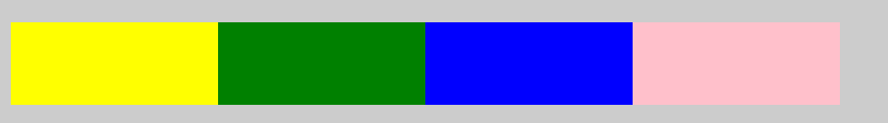
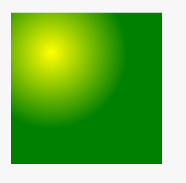

css3基础
选择器
CSS3新增了许多灵活查找元素的方法，极大的提高了查找元素的效率和精准度。CSS3选择器与jQuery中所提供的绝大部分选择器兼容。
属性选择器
1、E[attr] 表示存在attr属性即可；
2、E[attr=val] 表示属性值完全等于val
3、E[attr~=val] 表示的一个单独的属性值 这个属性值是以空格分隔的
4、E[attr|=val] 表示的要么一个单独的属性值 要么这个属性值是以“-”分隔的
5、E[attr*=val] 表示的属性值里包含val字符并且在“任意”位置
6、E[attr^=val] 表示的属性值里包含val字符并且在“开始”位置
7、E[attr$=val] 表示的属性值里包含val字符并且在“结束”位置
伪类选择器
E:nth-child(n) 第n个子元素，计算方法是E元素的全部兄弟元素
E:nth-of-type(n) 第n个子元素，计算方法只是E元素，会忽略其子元素的
存在
E:nth-last-child(n) 同E:nth-child(n) 计算顺序相反。
E:nth-last-of-type(n) 同E:nth-of-type(n) 计算顺序相反。
n遵循线性变化，其取值1、2、3、4、…
关于n的取值范围：
1、当n做为一个独立值时，n取值为n>=1，例如nth-child(n)
2、当n做一个系数时，n取值为n>=0者n<0，例如nth-child(2n+1)、nth-child(-n+5) 此处需要理解2n+1或者-n+5做为一个整体不能小于1；
E:only-child 表示当前以E确定的父元素，除E之外并无其它子元素（独生子）；
E:only-of-type表示当前以E确定的父元素， 除E之外不能包含其它和E同类型的子元素；
E:target 结合锚点进行使用，处于当前锚点的元素会被选中；
E:empty 选中没有任何子节点的E元素；
伪元素选择器
E::selection 可改变选中文本的样式
E::placeholder 可改变placeholder默认样式，这个存在明显的兼容问题，比如::-webkit-input-placeholder，具体参考手册进行对比。
E:after、E:before 在旧版本里是伪类，在新版本里是伪元素，新版本下E:after、E:before会被自动识别为E::after、E::before，按伪元素来对待。
“:”与 “::” 区别在于区分伪类和伪元素
颜色
新增了RGBA、HSLA模式，其中的A 表示透明度通道，即可以设置颜色值的透明度，相较opacity，不具有继承性，即不会影响子元素的透明度。
Red、Green、Blue、Alpha即RGBA
Hue、Saturation、Lightness、Alpha即HSLA
R、G、B 取值范围0~255
H 取值范围0~360，0/360表示黑色、120表示绿色、240表示蓝色
S 取值范围0%~100%
L 取值范围0%~100%
A 取值范围0~1
关于透明度：
1、opacity子元素会继承父元素的透明度，在实际开发中会带来干扰；
2 、transparent 设置透明度时完全类似于“玻璃”一样的透明；
文本
文字阴影与边框阴影相似，可分别设置偏移量、模糊度、颜色（可设透明度）。
单行文本溢出，需要配合overflow:hidden; white-space: nowrap;
难理解的点：
自已要多试着理解一下关于white-space的各个属性值之间的差异；
上述方法只能解决单行文本的溢出问题，多行文本溢出处理可参照下面的方法，但是有比较严重的兼容性，需要慎重选择，比较完备的多行溢出需要JS辅助完成，可自行尝试。
多行文本文字溢出处理，非标准属性，可应用于移动端
了解常握white-space 使用
边框
边框圆角
圆角处理时，脑中要形成圆、圆心、长半径、短半径的概念,正圆是椭圆的一种特殊情况.
可分别设置长、短半径，以“”进行分隔，遵循“1，2，3，4”规则，参考手册练习熟悉各种简写方式。
表格运用圆角需要要 border-collapse: separate;
当圆角半径小于或等于边框宽度时，元素内角是直角
如何在PS中查看圆角半径(需要PS知识)
边框图片
设置的图片将会被“切割”成九宫格形式，然后进行设置。
“切割”完成后生成虚拟的9块图形，然后按对应位置设置背景，
其中四个角位置、形状保持不变，中心位置水平垂直两个方向平铺。如下图
round 会自动调整尺寸，完整显示边框图片。
此图贴图
repeat 单纯平铺多余部分，会被“裁切”而不显示。
背景
背景在CSS3中也得到很大程度的增强，比如背景图片尺寸、背景裁切区域、背景定位参照点、多重背景等。
cover 会使“最大”边，进行缩放，另一边同比缩放，铺满容器，超出部分会溢出。
contain 会使“最小”边，进行缩放，另一边同比缩放，不一定铺满容器，会完整显示图片。
background-size会以background-clip设定的盒模型计算
背景图片尺寸在实际开发中应用十分广泛。
渐变
渐变是CSS3当中比较丰富多彩的一个特性，通过渐变我们可以实现许多炫丽的效果，有效的减少图片的使用数量，并且具有很强的适应性和可扩展性。
可分为线性渐变、径向渐变、重复渐变。
线性渐变指沿着某条直线朝一个方向产生渐变效果。
|
|
其中 第一个参数为渐变类型，括号里面为(渐变反向，起始颜色，结束颜色)
还可以自定义线性渐变区间与颜色

径向渐变指从一个中心点开始沿着四周产生渐变效果
|
|

关于圆的知识同边框圆角章节的介绍
伸缩布局(在移动端布局中有详细介绍)
主轴：Flex容器的主轴主要用来配置Flex项目。
侧轴：与主轴垂直的轴称作侧轴，是侧轴方向的延伸。
主轴和侧轴并不是固定不变的，通过flex-direction可以调整。
多列
column-count 属性指定了需要分割的列数。
定义了一个3列布局容器
column-fill 指定如何填充列
column-gap 指定列与列之间的间隙
column-rule 所有 column-rule-* 属性的简写
column-rule-color 指定两列间边框的颜色
column-rule-style 指定两列间边框的样式
column-rule-width 指定两列间边框的厚度
column-span 指定元素要跨越多少列
column-width 指定列的宽度
columns 设置 column-width 和 column-count 的简写